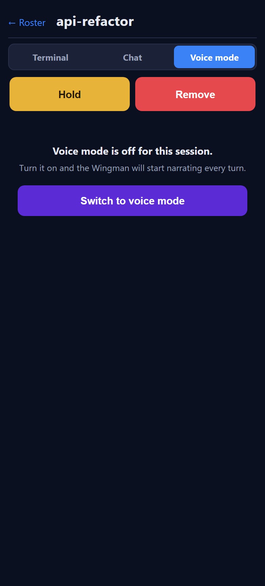
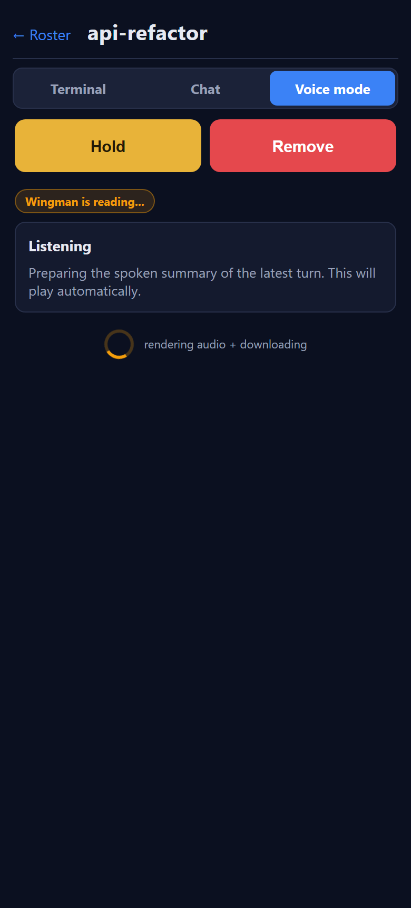
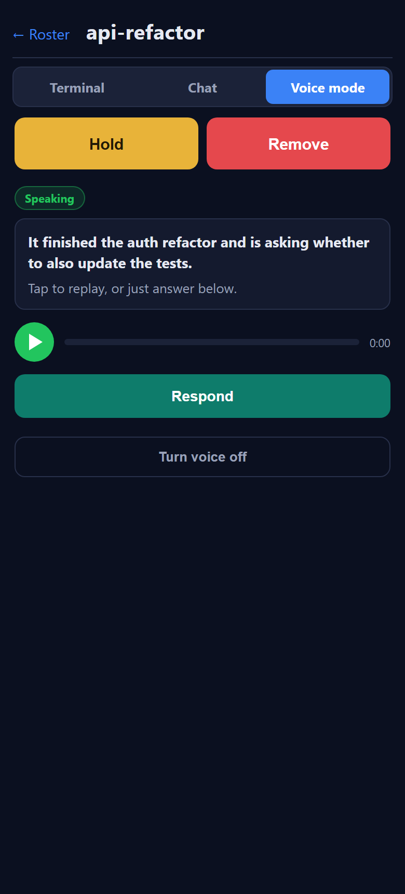
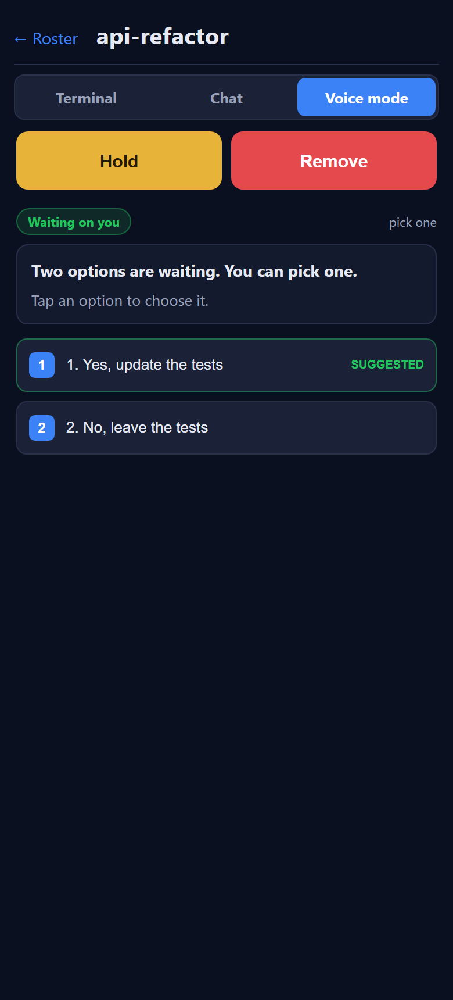
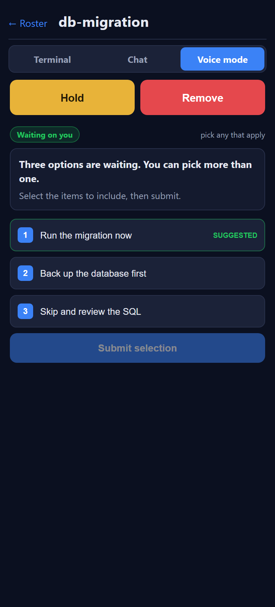
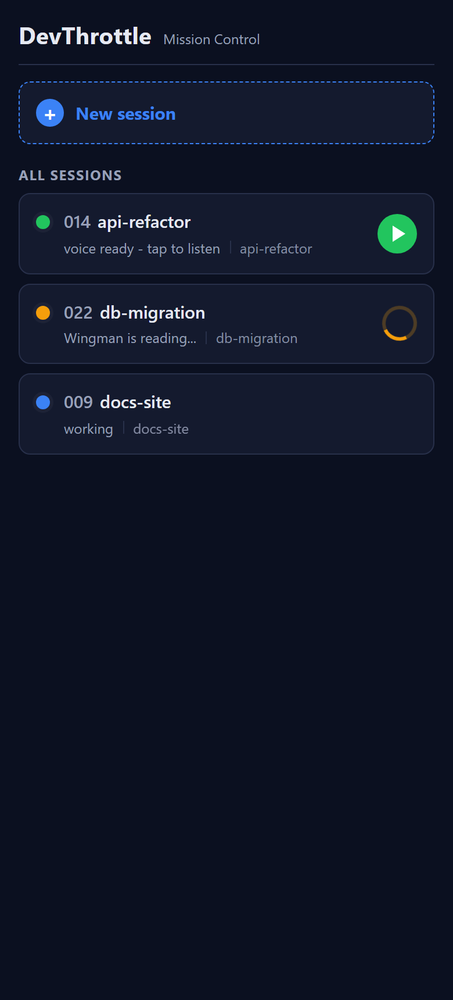
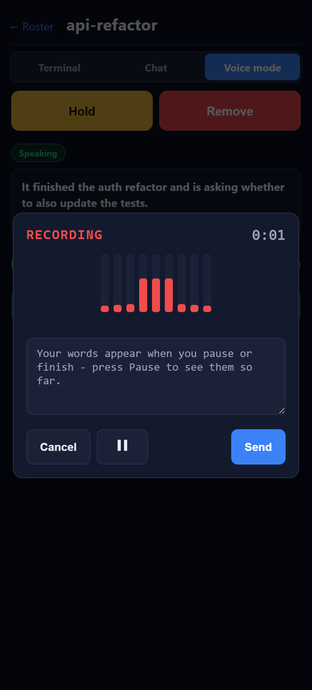

Issue #850 - Mobile Voice Mode
Developer Agent proof. Branch issue-850-mobile-voice-mode. DevThrottle mobile Progressive Web App (served at /m).
I believe this is finished.
1. What was implemented
The placeholder Voice mode tab is replaced with the real hands-free Wingman narration screen, plus a roster play-triangle gated on phone-side download. All of the backend already existed and was reused (the Wingman warm brain, the per-turn narrative with single/multiple selection, text-to-speech, the per-session audio cache, the read-only explain endpoint, menu detection + press); the new work is the mobile Progressive Web App user interface and one new behavioral rule.
- Voice screen (
mobile/src/pages/VoiceMode.tsx) with four states: off, working, speaking, and waiting-on-choice, plus audio playback (an<audio>element with replay + progress). - Phone-side download gate (
mobile/src/voice/clips.ts): a Cache-Storage-backed, reactive store keyed by session id + the clip'sgeneratedAt. "Phone-ready" means the bytes are on the phone; the triangle and any auto-play gate on phone-ready, never on gateway-ready. - Roster indicator (
mobile/src/pages/Home.tsx): a play-triangle once the clip is on the phone; a yellow spinner while the Wingman is generating or the phone is downloading. - Typed Gateway calls (
mobile/src/api/client.ts): explain, voice, voice/audio, menu, menu-press - each carrying the same Bearer the rest of the client uses. - Reply: the Respond button opens the shared dictation interface with Cancel / Pause / Send
and no Insert (a new
showInsertprop onDictationDialog); Send transcribes and sends straight into the session via the existing/promptpath. No hold-to-talk. Room is left for a future "Talk to the Wingman" target; it is not built. - On / off toggle: switching voice on now sets the owning Director's mobile view mode to Voice
(
POST /sessions/{sid}/voice-mode { enabled:true }) and marks the Gateway's turn-end re-narration set (explain), matching the native phone app's enter-voice flow - soSessionDto.VoiceModeflips true for every client and the on-state persists across navigation and shows on the roster. A low-emphasis Turn voice off control (shown in every on-state) calls{ enabled:false }- the same call the native app'sClearVoiceModemakes - and the screen returns to off.
api-refactor card shows the
play-triangle only because its clip finished downloading to the phone; the db-migration card, still
generating, shows the yellow spinner. Until the bytes are local, there is no triangle.
2. Acceptance criteria - met
| Criterion | How it is met | Proof |
|---|---|---|
| Switch a session into voice mode from the Voice tab | "Switch to voice mode" -> POST /voice-mode { enabled:true } (Director ViewMode=Voice, roster + persistence) + POST /wingman/explain (marks the Gateway set + first narration) | A -> B |
| Turn voice off again | "Turn voice off" -> POST /voice-mode { enabled:false } (Director ViewMode=Text), matching the native app's ClearVoiceMode; the screen returns to off and stays off | C -> G |
| First narration fetched and (foreground + phone-ready) auto-played | explain -> poll /wingman/voice -> ensureClip -> auto-play once, gated on !document.hidden | C |
| Every subsequent completed turn re-narrates when downloaded | Gateway turn-end watcher regenerates server-side; the phone polls generatedAt and downloads the new clip | C (loop) |
| Waiting on options: count + choices spoken; selectable buttons (single and multiple), submittable | /wingman/menu -> option buttons; menu-press (single: full send; multiple: concatenated toggles + submit) | D single, D multiple |
| List triangle ONLY after audio is on the phone; yellow + working while generating | clipState.phase === "ready" gates the triangle; effectiveColor yellow + spinner otherwise | E |
| Tapping the triangle plays the locally-stored clip, no download wait | playClip plays the cached object URL | E (triangle), C (player) |
| Respond opens dictation (Cancel / Pause / Send, NO Insert); Send goes into the session; no hold-to-talk | DictationDialog showInsert={false} -> sendPrompt(..., true) | F |
| Wingman stays read-only; a choice goes through the single write chokepoint | answers only via menu-press / prompt; no charter change | code |
3. Rendered screens
The REAL React components, rendered against the Vite dev server with the Gateway endpoints mocked
in-page (and a fake microphone for the reply dialog), at a phone viewport. They map 1:1 to mockups A-F in
docs/architecture/mobile/voice-mode.html.








4. Verification
npm run typecheckinmobile/- clean (no errors).npm run buildinmobile/-Build succeeded; the pre-existing chunk-size note (xterm) is unrelated to this change.- Seven screens rendered with no console errors and matched against the mockups (above).
5. CenCon impact
No drift. This is a frontend-only Progressive Web App change that reuses existing Gateway endpoints and the
Wingman read-only charter; zero .cs files changed, and no architecture or security boundary is added
or altered. architecture_manifest.yaml and security_profile.yaml are both current.